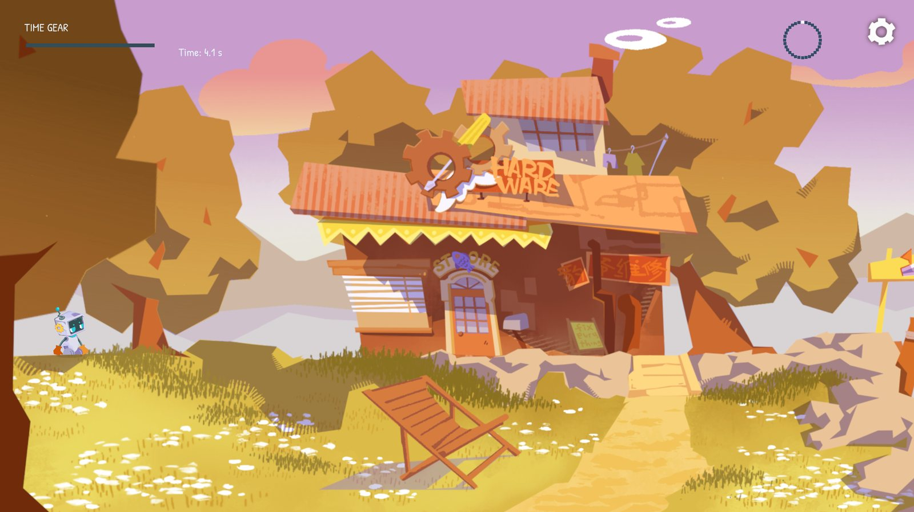
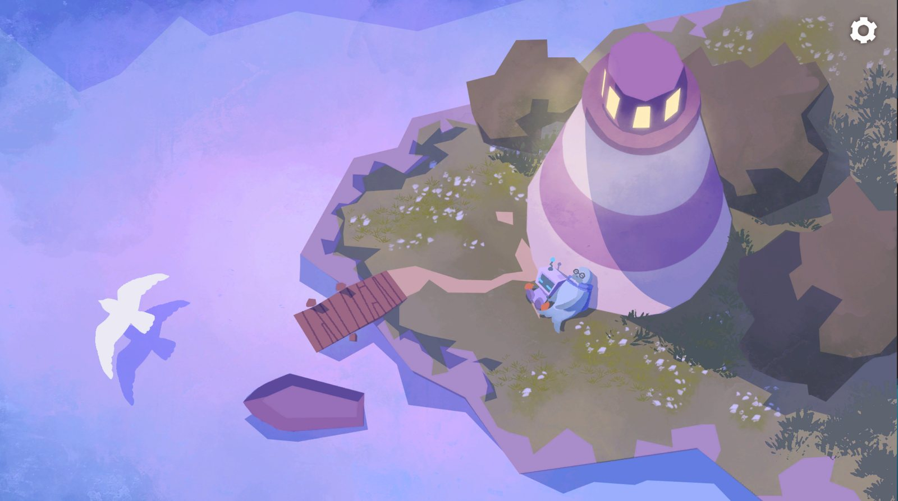

04
开场与结尾
剧情是一条直线：守灯人老海豹出海收网，风暴提前到来，灯塔没有亮。人偶穿过海岸，登上灯塔上紧发条，灯亮了，小船朝着光划回来。
开场原本是一段摸头动画，美术提议改成可操作的对话：人偶走到老海豹身边按 E 交谈，4 句台词交代了出海收网、看好家和回来再上发条，之后电视里的天气广播说风暴提前。这是全游戏唯一有对白的地方，台词不直接说出目标，玩家出门后看到远处没亮的灯塔，自己明白要去哪。
结尾配赛事主题音频，整段原样播放。音频里有五声发条，画面依次对上：0.3 秒开始上发条，20.6 秒灯亮，36.5 秒光束扫过海面找到小船，44.5 秒小船转向，53.0 秒小船靠岸。

